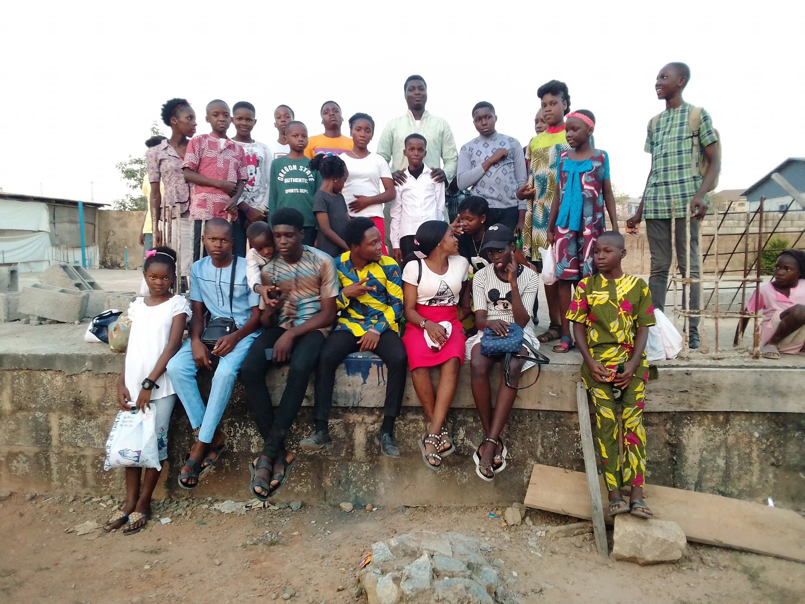

01
Gifted and Talented Orphanage Home
The public Facebook album documents CTYBC’s visit to the orphanage home. Three photographs from the album are presented here; the original album contains the full record.
Open the original 2019 albumCommunity work and shared programmes recorded in CTYBC’s public albums.
From a visit to Gifted and Talented Orphanage Home to school focused campaigns, CTYBC’s archive records practical service alongside faith formation.



The public Facebook album documents CTYBC’s visit to the orphanage home. Three photographs from the album are presented here; the original album contains the full record.
Open the original 2019 albumRecent CTYBC campaign posts call for sanitary products and financial support to help girls manage their periods with dignity and stay in school. Contact the club to confirm current campaign dates, partner schools and ways to contribute.
See current campaign updatesSee retreat albums, gatherings and other documented community events.